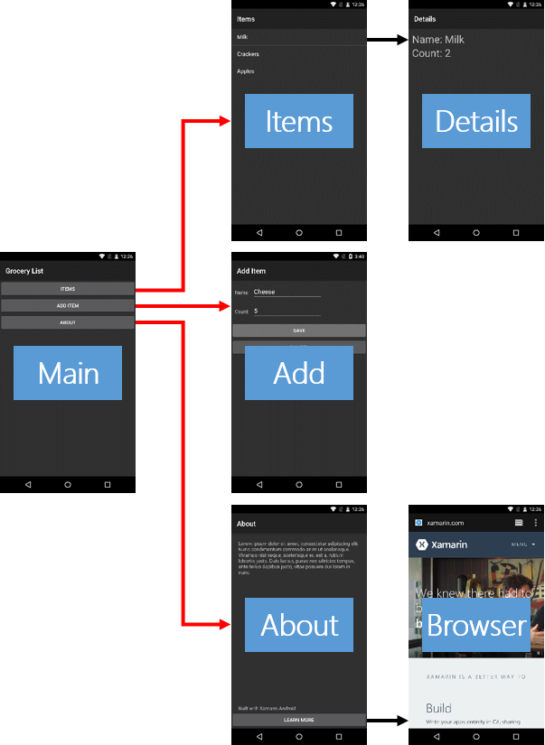

Durée
10 minutes
Objectifs
L'objectif principal de cet atelier est d'utiliser des Intents explicites pour démarrer des activités à partir de votre package d'application. Vous allez écrire le code pour commencer l'Activité éléments, l'activité Ajouter un élément et l'activité À propos. Les lignes rouges dans l'image ci-dessous indiquent les parties de l'application
Challenge
Utilisez les directives ci-dessous pour réaliser l'exercice.
- Ouvrez la solution GroceryList.sln dans le dossier Part 02 Resources/Start.
- Ouvrez MainActivity.cs.
- Ajutez à la méthode
OnItemsClickle code permettant de naviguer vers l'activitéItemsActivity. - Ajoutez à la méthode
OnAddItemClickle code permettant de naviguer versAddItemActivity. - Ajoutez à la méthode
OnAboutClickle code permettant de naviguer versAboutActivity. - Exécutez et testez votre application
Steps
Below are the step-by-step instructions to implement the exercise.
Start an Activity
Here you will use explicit Intents to launch Activities in your app. You will do it two ways: first by creating an Intent
object to pass to StartActivity and second using the overloaded version of StartActivity that
automatically creates the Intent for you.
- Open the GroceryList.sln solution in the Part 02 Resources/Start folder.
- Open MainActivity.cs.
-
Add code to the
OnItemsClickmethod to navigate the app to theItemsActivity. Do this by creating an Intent object and passing aContext(i.e. your Activity) and aTypeobject to the constructor. CallStartActivityand pass the Intent. The code is provided below, hidden behind a button. -
Repeat the previous step for the Add Items Activity. I.e. add code to the
OnAddItemClickmethod to navigate the app to theAddItemActivity. Do this by creating an Intent object and passing it toStartActivity. -
Add code to the
OnAboutClickmethod to navigate the app to theAboutActivity. Use the version ofStartActivitythat takes aTypeobject so you can avoid creating an Intent object. The code is provided below, hidden behind a button. - Run the app to test your work. Navigate to each of the Activities you started. Use the Android Back-button to return to the Main Activity.
Résumé
Dans cet exercice, vous avez utilisé deux techniques pour lancer une activité définie dans le package de votre application. Vous utilisez généralement le premier
style dans lequel vous créez un Intent lorsque vous avez des arguments à transmettre à l'activité cible.
La deuxième technique utilisant la surcharge StartActivity est appropriée quand aucun argument n'est nécessaire.